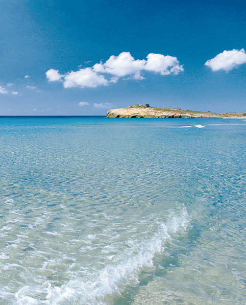

Beaches and tourism. Dedicated to the environment
Despite the phenomenon of tourism it is still possible to preserve our natural and cultural treasures, without jeopardizing the future; it can be compatible with present development, by encouraging sustainable tourism. This concept took firm root on the island with the 1993 declaration of the Biosphere Reserve by UNESCO.
 This tourism from a social perspective allows people to enjoy other places, cultures, and enjoy different activities. Among the characteristics highly valued in a tourist destination are hospitality, gastronomy, culture, scenery, unspoilt countryside, and most of all the beaches. Aspects that stand out in Menorca.
This tourism from a social perspective allows people to enjoy other places, cultures, and enjoy different activities. Among the characteristics highly valued in a tourist destination are hospitality, gastronomy, culture, scenery, unspoilt countryside, and most of all the beaches. Aspects that stand out in Menorca.
 Under the premise that if there is not sustainability quality can’t be offered, the tourist sector on the island is making huge efforts to protect the environment, and keep the fragile equilibrium of Menorca as a destination. All sectors involved in the planning of tourism, combined with cultural, technological and professional innovation are priorities in the new strategy geared to preserve the quality of the island and to satisfy emerging interests of tourists in the XXI century.
Under the premise that if there is not sustainability quality can’t be offered, the tourist sector on the island is making huge efforts to protect the environment, and keep the fragile equilibrium of Menorca as a destination. All sectors involved in the planning of tourism, combined with cultural, technological and professional innovation are priorities in the new strategy geared to preserve the quality of the island and to satisfy emerging interests of tourists in the XXI century.